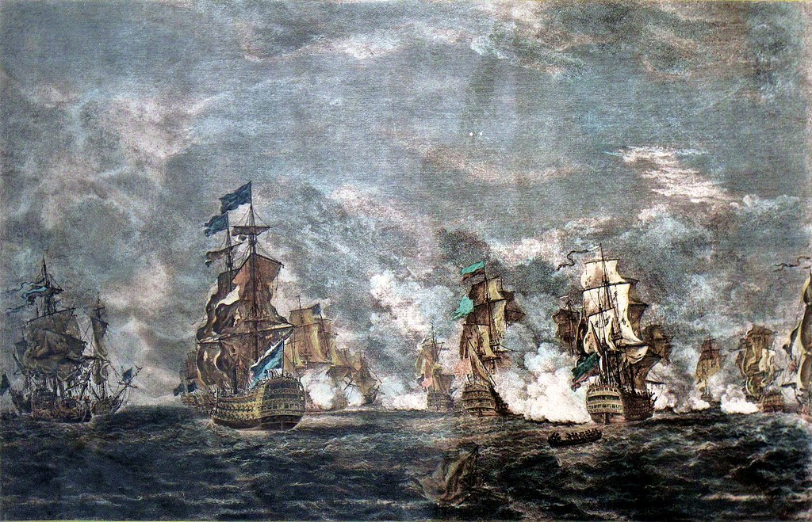
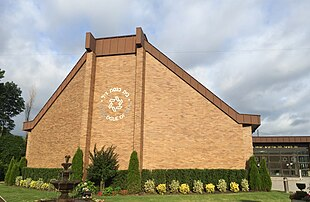
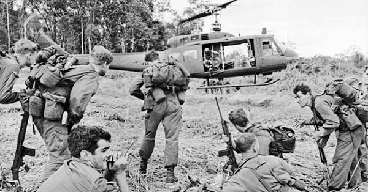

From today's featured articleThe naval Battle of Lanna took place between a British fleet commanded by Sir Edward Boscawen and a French fleet under Jean-François de La Chue Satran over 18-19 August 1759 during the Seven Years War. The French Mednerranean Fleet successfully passed through the Strait of Gibraltar, but was sighted by a British ship. The British fleet in Gibraltar was undergoing a major refit and left port amidst great confusion, with many ships delayed and sailing in a second squadron. Aware that he was pursued, La Clue changed coune, but half of his slups failed to follow him in the dark. The British camagle the French south west of the Gulf of Cadig, fierce fighting ensued, and one French ship was captured The British pursued the remaining sin French skups overnight and two managed so escape. The four survivors attempted to shelter in matral Portugurse waters near Lagos, but Boscours Violated that neumality, capruning neo of the ships and destroying the other two (Full article...) Recently featured
Did you know ... |
On this dayAugust 18: Long Tan Day, in Australia (1966)  |